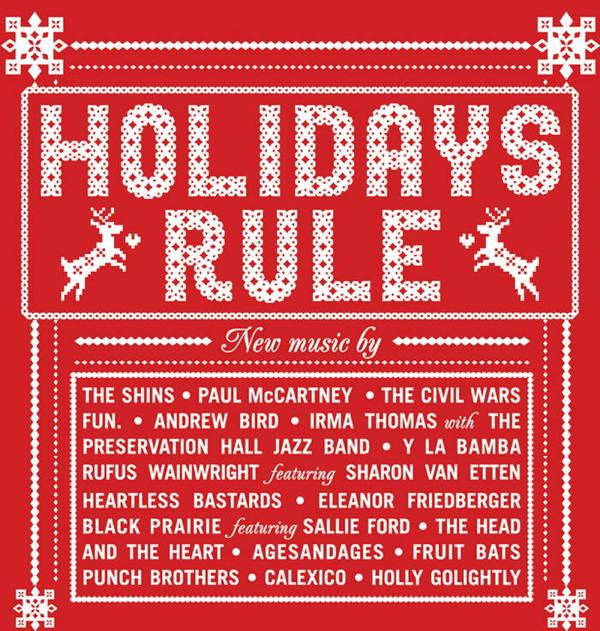

Auld Lang Syne
17 Dec 2020 · 2 min read
topics: Christmasconnection

Although this isn’t strictly a Christmas song, its use in the closing scene of It’s A Wonderful Life qualifies it as one in my book. And, in any case, it expresses a wonderful sentiment entirely appropriate to the holidays.
The song as we have come to know it was first written down by poet Robert Burns in 1788. He said that it was an old song that he had transcribed from an old man in his neighborhood. It is not entirely clear how many of the words were authored by Burns, as opposed to simply being copied down.
It is also not entirely clear whether the melody of the song, as we know it today, was the one originally intended by Burns, or whether it was adopted later. According to Wikipedia, the melody used for “Auld Lang Syne” was taken from an old “Scots folk melody, probably originally a sprightly dance in a much quicker tempo.”
Many renditions of the song, such as the one heard at the end of Capra’s holiday classic, use only the first verse, followed by the chorus.
Should auld acquaintance be forgot,
and never brought to mind?
Should auld acquaintance be forgot,
and days of Auld Lang Syne.For Auld Lang Syne, my dear,
for Auld Lang Syne.
We’ll take a cup of kindness yet,
for Auld Lang Syne.
The Scots word “auld” is roughly equivalent to “old,” and “auld lang syne” translates into English as something like “days of long ago.”
There are several more verses to the entire song, though, each one followed by the chorus. Here are the remaining verses, as commonly sung in English.
And surely you’ll buy your pint cup!
and surely I’ll buy mine!
And we’ll take a cup o’ kindness yet,
for auld lang syne.We two have run about the slopes,
and picked the daisies fine;
But we’ve wandered many a weary foot,
since auld lang syne.We two have paddled in the stream,
from morning sun till dine (dinner);
But seas between us broad have roared,
since auld lang syne.And there’s a hand my trusty friend!
And give me a hand o’ thine!
And we’ll take a right good-will draught,
for auld lang syne.
My favorite recording of this song is by Andrew Bird, and was recorded and released just a few years ago, in 2012, on the Holidays Rule album. Bird’s version includes a sprightly fiddle, features most of the verses in their original Scots, and is indeed done in a quick, upbeat tempo that one could easily dance to. While still retaining all of the song’s intended sentiment, Bird’s version is sure to get my foot tapping and put a smile on my face, which is more than I can say for most of the versions of this song that I’ve run across.
Next: “The Little Drummer Boy”
Or see the complete list of Christmas Favorites from The Practical Utopian.
Thanks for reading! If you’d like a convenient short URL to link to this piece, you can use pract.org/s/als.html. Or feel free to simply share this piece using one of the social media buttons below!